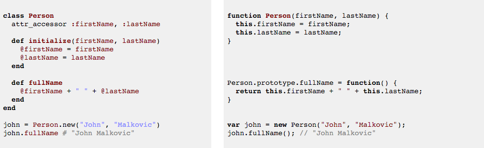

"The journey of a thousand miles begins with a single step." - Lao Tzu
I am not very comfortable with JavaScript, yet, although I have a feeling I will actually like all its parentheses, semicolons, and other excessive syntax when I warm up to it. Might that qualify as one of my quirks?
One of the differences between Ruby and JavaScript is how they construct and organize methods/functions. I find Ruby classes much easier to read and better organized, so it was helpful to learn about that first. Ruby classes contain a collection of method definitions that can be called on any object of that class. To create a new instance of the class, we use the method .new, which essentially "constructs" an instance, or object, of that class. When we have a new object, we can call any method of the class (called instance methods) on the object with dot notation.
In JavaScript, things feel less organized and clear cut to me. Take a look at this example* below that I found from this link.

Here we see the Ruby class on the left and Javascript function constructor on the right. The Person class has two method definitions - 1) to initialize a new instance of the class by storing the first and last name given and 2) to return the full name when the method fullName is called. The organization of this code is clear and we can see that the methods both belong to the class Person. When a new instance of the class is created, john, we are able to call the fullName method on it.
On the other side, JavaScript's function constructor does this a little differently. The "class" of Person (JavaScript does not formally use the name "class" for new objects, but I will use it here for ease of connecting back to the familiar term in Ruby) is created with the function keyword and the initialization happens within the code block in {} and uses this to create a new instance of the class (as we see happening at the bottom with the new variable john). Rather than grouping other methods of the class within the class beginning and end as in Ruby, JavaScript simply requires you to use the code Person.prototype.fullName = function() {}, with the expression for what we want the function to do within the curly braces. The instance variables are stored in the function with less distinction than those of Ruby classes and the function constructor actually takes up fewer lines of code to do the same thing. Where Ruby uses keywords like def/end, JavaScript uses lots of curly braces {}, parentheses (), and semicolons ;.
I can see that function constructors may reduce the lines of code and make it easy to construct a new function anywhere within the program, but I still think I will prefer Ruby's classes because of the organization and clear beginning and end boundaries. I'm sure I'll also come to love constructing functions all over my JavaScript programs, eventually!
* This example does not use correct Ruby styling. While JavaScript uses camelcase (fullName), Ruby uses snake case (full_name).